import os import time openApp('VSRTC'); wait(, 5) # Log out if exists(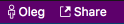, 3) != None: click(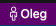) wait(Pattern(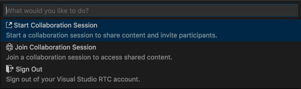).targetOffset(-243,52)) click(Pattern().targetOffset(-243,52)) wait(Pattern().similar(0.95)) # Log in openApp('VSRTC'); click(Pattern().similar(0.95)) wait() click(Pattern().targetOffset(476,-4)) wait(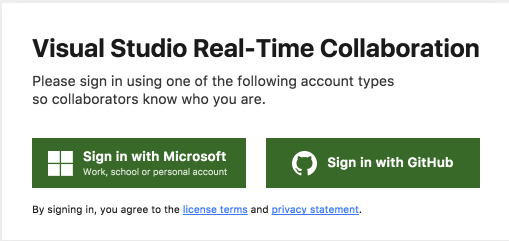, 5) #if os.environ['VSRTC_PROVIDER'] == 'MICROSOFT': if True: click(Pattern().targetOffset(-108,36)) wait(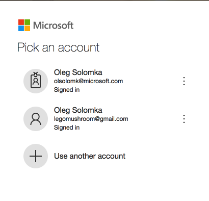, 5) click(Pattern(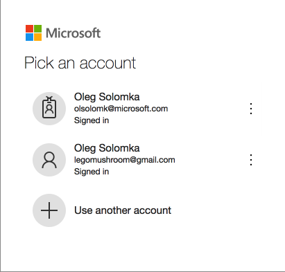).targetOffset(-54,-47)) else: click(Pattern().targetOffset(114,45)) wait(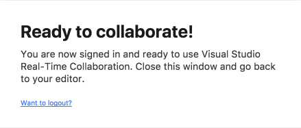, 5) type("w", KEY_CMD) switchApp('VSRTC') if exists(, 5) == None or exists(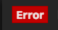) != None: type("`", KEY_CTRL) wait(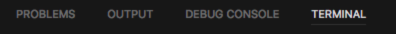) click(Pattern(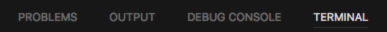).targetOffset(-69,2)) wait(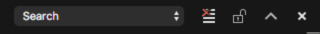) if exists(Pattern(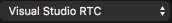).similar(0.92)) == None: click(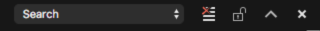) type('Visual Studio RTC') type(Key.ENTER) hover(Env.getMouseLocation().offset(0, 40)) mouseDown(Button.LEFT) mouseUp() type('a', KEY_CMD) type('c', KEY_CMD) time.sleep(2) output = Env.getClipboard() # Devtools output: wait(Pattern(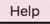).similar(0.91), 5) click(Pattern().similar(0.91)) wait(Pattern(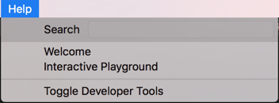).similar(0.91), 5) click(Pattern().similar(0.91).targetOffset(-69,53)) wait(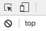, 5) hover(Pattern(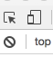).targetOffset(-2,30)) mouseDown(Button.LEFT) mouseMove(Env.getMouseLocation().offset(0, 25)) mouseUp() type('a', KEY_CMD) time.sleep(2) type('c', KEY_CMD) time.sleep(2) devtoolsOutput = Env.getClipboard() click(Pattern(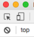).targetOffset(-23,-29)) print(">>> SignIn failed") print(" >> output: ") print(output) print(" >> devtools output: ") print(devtoolsOutput) else: print('OK')